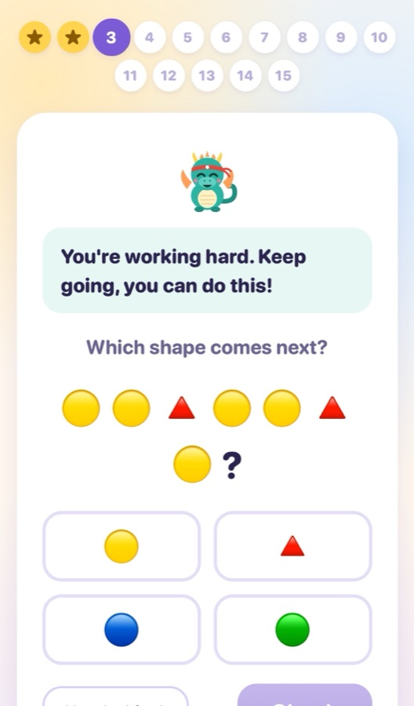
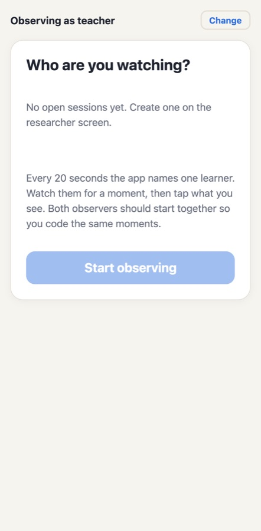
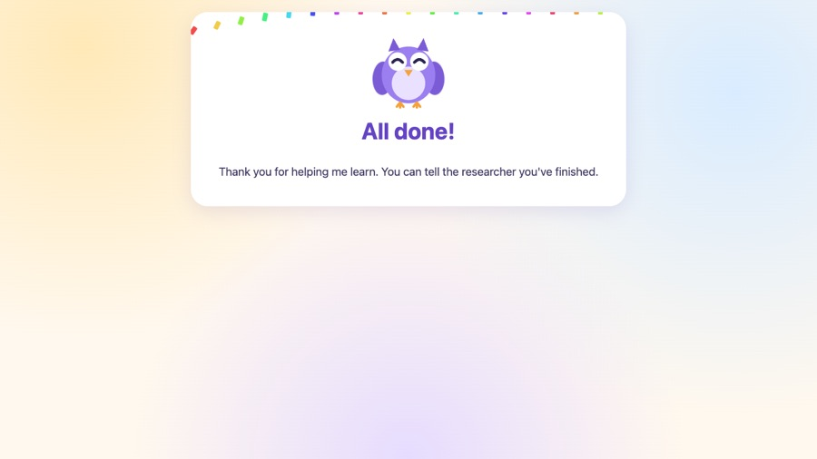

Akachi David Nwanze · BSc Software Engineering (ML) · African Leadership University · Supervisor: Elvira Immaculate Khwatenge · October 2026 · Repository: github.com/S1rDavid9/SensAI_capstone
SensAI is a web app for learners aged 8 to 14 that adapts short maths and pattern puzzles to how a learner is working. After every answer it runs a closed loop: Stage 1, a classifier, estimates a behavioural state from the last five answers (on task, rushing/under-challenged, or struggling/needs support); Stage 2, a Deep Q-Network (DQN) trained in simulation, chooses one of eight scaffolding actions; guardrails rule out actions no teacher would choose; and the app applies the action by choosing the next question and showing a short message or hint. Engagement is treated strictly as observable behaviour (Fredricks et al., 2004): the system does not claim to detect emotions. This milestone delivers the simulation and policy (Phase 1), the data-collection pilot with 31 learners at Excella School, Kigali, the Stage 1 classifier trained on that data, and the closed-loop adaptive app as the final MVP.
Features are mapped to the approved proposal as corrected by my supervisor's feedback; where that feedback changed the plan, the changed version is what was built, and the deviation is stated.
| Planned feature | Intended purpose | Status | Evidence and notes |
|---|---|---|---|
| Telemetry logging engine (Objective 1) | Capture response time, errors, hints, time on task without cameras or sensors | Completed | Learner screen logs answers, time to first input, edits, 20-s pauses, leaving the window, check-ins, and now device/browser (pilot/services/learning.py, pilot/web/src/screens/Learner.tsx) |
| Simulation and DQN, benchmarked against PPO, A2C, REINFORCE (Objective 2) | Learn a scaffolding policy before real data exists | Completed, extended | Done in Phase 1, so it is reported as a result, not future work (supervisor feedback). Extended with simulator v2 after the pilot exposed two reward loopholes (environment/custom_env.py, decision 12; logs/v2/evaluation.md) |
| Operational behavioural states (feedback) | Define engagement-risk states by observable behaviour | Completed | BehaviouralState: on task, rushing, struggling, stuck, each mapped to a DQN state slot (pilot/core/states.py); the class diagram's affective labels are replaced |
| Ground-truth labelling (Objective 3) | Validate telemetry against independent labels | Partial | Learner self-report check-ins: 94 collected. Two-observer momentary time sampling built and used, but only 24 codes and no paired codes, so inter-rater agreement (Cohen, 1960) could not be computed |
| Feasibility pilot, 10–20 learners (Objective 4; setting named per feedback) | Collect real telemetry from school-age learners | Completed with deviation | Excella School, Kigali (private), IREC approval, guardian consent and learner assent; 31 learners started and 30 finished, above the planned 10–20. Run in batches of about 12 on school Chromebooks plus iPhones, an Android phone, iPads, and Mac and Windows laptops, in Chrome and Safari |
| Stage 1 classifier: logistic regression / shallow XGBoost | Predict the state from telemetry | Completed | Leave-one-learner-out cross-validation (CV split by learner, per feedback); analysis/stage1.py, models/stage1/ |
| Shadow mode (feedback) | Guarantee the DQN did not affect pilot learners | Completed | Decisions stored server-side only; verified by test_shadow_mode_never_reaches_the_learner |
| Guardrails (approved in office hour) | Block actions no teacher would choose | Completed (new) | Shield with rule classes (pilot/policy/shield.py) |
| Integrated web prototype (Objective 4) | Run the full telemetry → state → action loop | Completed | Adaptive mode (pilot/services/modes.py, pilot/adaptation/); demonstrated by the researcher, not used with children |
| Decision plausibility (defined per feedback) | Two raters score DQN decisions 1–3; weighted kappa | Partial | Blind sheet of 120 items from 60 real moments generated (analysis/stage2_on_pilot.py); ratings pending |
| Data layer: four tables (text) vs five / six (diagrams) | Store sessions, telemetry, labels, decisions | Completed, reconciled | Six tables: sessions, answers, events, check-ins, observations, decisions (pilot/storage/). SQLite, the proposal's option for a small pilot |
| Docker deployment (proposal 3.4) | Reproducible deployment | Not implemented | Replaced by a locked uv environment and a local-network server: the school network could not be relied on, and no cloud service may receive learner data under the ethics approval |
create_app).Backend/frontend interaction. The React (TypeScript) screens talk to a FastAPI backend over JSON. The learner screen sends an event when a question is shown, at the first keystroke, every 20 seconds without input, and on leaving the window, then posts the answer with client-measured timings. The server grades it, stores it, runs Stage 1 → Stage 2 and, in adaptive mode, stores the next question and the support message, which the next /question call returns. Devices synchronise clocks with /api/time (offset taken from the lowest round-trip of three samples) so observations from phones line up with laptop events.
Shield.decide masks forbidden actions and takes the arg-max of the remaining Q-values. Both the raw and the shielded action are stored, so results can be reported with and without guardrails.| Approach | Why chosen | How conducted and results | Improvements made afterwards |
|---|---|---|---|
| Unit and integration (pytest) | Each class has one job, so it can be tested alone; the API must behave correctly end to end in both modes | 77 tests; 96% of pilot/ statements covered. Cover the question bank, both labellers, every guardrail rule, the planner, database upgrades (including six processes starting at once), consent rules, access keys, invalid inputs (wrong code, wrong question, negative time, unknown event, early finish → 400/403/404/409/422) and full sessions in both modes | Planner message corrected when difficulty cannot change; shadow-mode test added at the supervisor's request |
| Stress / performance | A class answers at once on one laptop server; failure would lose children's data | tests/performance/load_test.py runs the real server and 10, 30, 60 and 100 learners answering all 15 questions with no thinking time. 0 failed requests out of 32,000. At 30 learners, median 0.04 s and 95th percentile 0.45 s; at 100, 95th percentile about 1.1–1.3 s. Memory 0.2–0.4 GB (one worker) | "database is locked" when several workers started → file-locked initialisation; 2-s first-answer delay → models load at startup; SQLite WAL mode; PyTorch on one thread |
| Compatibility (Playwright) | Learners used Chromebooks, phones, iPads and laptops | Full adaptive session per target in Chrome 155 (Android phone, Chromebook 1366×768, desktop), WebKit 27.2, the Safari engine (iPhone 13, iPad, Mac) and Firefox 157: 7/7 pass, page load 34–110 ms, no JavaScript errors, no horizontal overflow | Smallest buttons measured 43 px, under the 44 px touch-target guideline → all learner buttons and inputs at least 48 px |
| Field / usability (pilot) | Real use by the target age group | 31 learners, batches of about 12, on Chromebooks, iPhones (Safari and Chrome, both WebKit, matching the WebKit tests), an Android phone, iPads, and Mac and Windows laptops; 30 of 31 finished; only 4 ever left the window; 94 check-ins answered | Device, browser and screen size are now recorded per session; smaller batches recommended for observation |



Signals vs labels. Error rate in the five questions before a check-in separated "hard/lost" from other answers by 1.46 standard deviations within the same block (p = 0.0001). Response time alone did not, because the two struggling answers behaved oppositely: "hard" was slow (median 69 s), "lost" was fast with 74% errors, consistent with rapid guessing (Wise & Kong, 2005). Stage 1 (leave-one-learner-out, 92 labelled blocks): balanced accuracy 0.67 against 0.33 for the majority baseline; AUC 0.90 for "needs support". Adding more features lowered accuracy (all seven: 0.58; shallow XGBoost: 0.47), so the deployed model uses error rate and response time only. Stage 1 → DQN on the 463 real answers: under-challenged → move on (76%) or challenge (20%); needs support → simplified repeat (52%), easier (29%), encourage (19%); on task → the DQN chose "easier" 70% of the time, which the guardrail blocked (21.8% of all decisions shielded). On-task behaviour is the policy's known weak spot.
core (domain), labelling, policy, adaptation, storage, services, api. Routes contain no logic; services raise domain errors (NotFound, Conflict…) that one handler maps to HTTP.StateLabeler (implemented by RuleBasedLabeler and Stage1Labeler), ActionScorer (DQNPolicy, and a fake scorer in tests), GuardrailRule (StateRule, DifficultyBoundsRule) and SessionMode (ShadowMode, AdaptiveMode: the Strategy pattern). Inheritance is used only for these interfaces.Database class owns connections and upgrades. New rules or labellers are added without changing existing classes (open/closed); services receive their collaborators in create_app (dependency inversion), which is what makes them testable with fakes.BehaviouralState, CurriculumPlanner), frozen dataclasses for value objects, module docstrings explaining why, settings read once from the environment, and a commit history describing each change.The pilot ran under ALU Research Ethics Committee approval with guardian consent and learner assent; learners are known only by codes, and no cloud service receives their data. During the pilot the DQN never affected learners: everyone saw the same 15 questions and the policy's decisions were only stored. Adaptive mode is demonstrated by the researcher; using it with children needs a new approval. Limitations: one school and one session per learner; only 11 "hard"/"lost" check-ins; observations too sparse for inter-rater agreement; more learners than the approved 10–20 (a deviation from the approved protocol); plausibility ratings still pending; and REINFORCE results are not reproducible. Next: rate the plausibility sheet with the class teacher, run a smaller observation session for paired codes, and seek approval to evaluate adaptive mode with learners.
Alshiekh, M., Bloem, R., Ehlers, R., Könighofer, B., Niekum, S., & Topcu, U. (2018). Safe reinforcement learning via shielding. Proceedings of the AAAI Conference on Artificial Intelligence, 32(1). https://doi.org/10.1609/aaai.v32i1.11797
Baker, R. S., Corbett, A. T., Koedinger, K. R., & Wagner, A. Z. (2004). Off-task behavior in the cognitive tutor classroom: When students "game the system". In Proceedings of the SIGCHI Conference on Human Factors in Computing Systems (pp. 383–390). ACM. https://doi.org/10.1145/985692.985741
Beck, J. E. (2005). Engagement tracing: Using response times to model student disengagement. In Artificial Intelligence in Education (pp. 88–95). IOS Press.
Cohen, J. (1960). A coefficient of agreement for nominal scales. Educational and Psychological Measurement, 20(1), 37–46. https://doi.org/10.1177/001316446002000104
Fredricks, J. A., Blumenfeld, P. C., & Paris, A. H. (2004). School engagement: Potential of the concept, state of the evidence. Review of Educational Research, 74(1), 59–109. https://doi.org/10.3102/00346543074001059
Mnih, V., Kavukcuoglu, K., Silver, D., Rusu, A. A., Veness, J., Bellemare, M. G., Graves, A., Riedmiller, M., Fidjeland, A. K., Ostrovski, G., Petersen, S., Beattie, C., Sadik, A., Antonoglou, I., King, H., Kumaran, D., Wierstra, D., Legg, S., & Hassabis, D. (2015). Human-level control through deep reinforcement learning. Nature, 518(7540), 529–533. https://doi.org/10.1038/nature14236
Wise, S. L., & Kong, X. (2005). Response time effort: A new measure of examinee motivation in computer-based tests. Applied Measurement in Education, 18(2), 163–183. https://doi.org/10.1207/s15324818ame1802_2